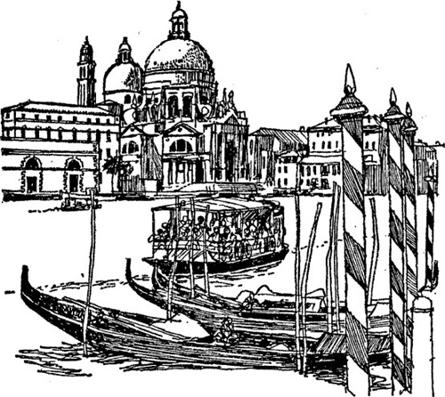

13
Listen to Part 1:

Không làm phiền
Hành lang bên ngoài cabin 22 vẫn còn trống không. Mọi thứ im ắng hẳn. Salahadin vào cabin rồi thận trọng nhấc chiếc hộp lên. Anh mang nó qua hành lang tới cabin mình.
Anh trở lại hành lang lần nữa. Trong từng phòng đều thấy một tấm bảng đề "Không làm phiền" với những chữ cái in hoa. Salahadin lấy tờ giấy và treo nó ở cửa phòng 22.
KHÔNG LÀM PHIỀN
Anh nhân viên phục vụ sẽ nhìn thấy tờ thông báo đó, Salahadin tự nhủ. Anh ta sẽ nghĩ rằng Peterson bị ốm. Không ai vào phòng 22 cho đến khi tới Venezia.
Anh khoá cửa phòng 22 và treo chìa khoá vào móc trong phòng của anh nhân viên phục vụ. Rồi Salahadin trở lại phòng mình. Đồ ăn vẫn còn trên bàn, nhưng anh không đói. Anh ném nó ra ngoài cửa sổ.
Salahadin nhìn vào đồng hồ. Anh kinh ngạc. Mới chín giờ kém mười lăm phút. Quá nhiều chuyện đã xảy ra trong thời gian ngắn ngủi.
Sau vài phút có tiếng gõ cửa. Là người nhân viên phục vụ.
Anh ấy nói với Salahadin: "Tôi mong rằng ngài đã dùng bữa tối vui vẻ".
Salahadin đáp lại: "Cảm ơn ông. Thực sự rất vui".
Listen to Part 2:
Người nhân viên phục vụ nói: "Ngài Peterson đã treo tấm biển 'Không làm phiền' lên cửa phòng. Có thể ông ấy ốm rồi. Tôi sẽ không làm phiền ông ấy cho đến tận khi tới Venezia."
Salahadin trả lời: "Được. Tôi mới gặp ông ấy cách đây nửa tiếng. Ông ấy bảo thấy hơi mệt. Cả ngày hôm sau ông ấy đều không cần bất cứ thứ gì."
Người nhân viên phục vụ hỏi: "Ngài muốn dùng điểm tâm lúc mấy, thưa ông?".
Salahadin đáp lại: "Tôi thấy hơi mệt mỏi. Đừng đánh thức tôi dậy vào sáng mai nhé. Khi nào muốn điểm tâm tôi sẽ gọi anh".
Người nhân viên phục vụ nói: "Vậy thì chúc ngài ngủ ngon".
Salahadin cũng chào ngủ ngon rồi đóng cửa phòng lại. Đã lâu lắm rồi anh không nằm trên giường và anh rất mệt mỏi. Anh cởi quần áo và lên giường. Đầu tiên, anh còn thấy khó ngủ vì tàu vẫn chạy. Nhưng anh nhanh chóng chìm vào giấc ngủ và ngủ rất ngon suốt cả đêm.
Hôm sau, khi Salahadin tỉnh dậy, ánh mặt trời tươi đẹp đang chiếu vào phòng. Anh nhìn vào đồng hồ. Gần mười một giờ rồi. Anh bấm chuông gọi anh nhân viên phục vụ.
Salahadin hỏi: "Khi nào thì đến Venezia?".
Người nhân viên phục vụ đáp: "Hôm nay tàu đến sớm hơn dự kiến. Chúng ta sẽ đến đó sau hai giờ nữa. Nhưng ngài không cần phải rời khỏi tàu ngay lập tức, ngài có thể dùng cơm trưa trước đã.
Listen to Part 3:
Salahadin đáp: "Không, cám ơn anh. Tôi muốn rời khỏi tàu càng sớm càng tốt. Còn ngài Peterson thì sao? Ông ấy đã khoẻ hơn chưa?".
Người nhân viên phục vụ đáp: "Tấm bảng vẫn ở trên cửa. Tôi không làm phiền ông ấy cho đến khi ăn xong bữa trưa."
Salahadin nói: "Như vậy là tốt. Anh hãy mang cho tôi ít cà phê nhé.".
Salahadin nhâm nhi ly cà phê và bắt đầu thay đồ. Anh nghe thấy rất nhiều tiếng ồn. Con tàu đang tới Venezia.
Salahadin nhìn ra hành lang. Hành lang trống không. Anh nhân viên phục vụ đã vào bếp. Salahadin nhấc chiếc hộp nặng rồi rời khỏi cabin.
Từ boong tàu, Salahadin thấy những toà nhà cao tầng của Venezia. Họ đang đi qua Quảng trường Thánh Máccô. Giờ họ đã tới gần bến tàu.
Nửa tiếng sau, tàu cập bến. Salahadin rời khỏi The Syria trong lúc những hành khách khác đang ăn trưa.
Một viên cảnh sát hỏi: "Ông đựng gì ở trong hộp đấy?".
Salahadin đáp: "Sách vở thôi mà." Anh không muốn gặp thêm bất cứ rắc rối gì nữa.
Viên cảnh sát không yêu cầu Salahadin mở hộp. Vài phút sau, Salahadin đã ở trên tàu thuỷ trên đường tới ga tàu.
Listen to Part 4:
Cuối cùng cũng bình an rồi, Salahadin nghĩ như thế. Khi họ mở khoang phòng 22 ra, họ sẽ không thấy gì. Họ sẽ rất kinh ngạc.

Mục lục
- Phần mở đầu
- Trang tiêu đề
- Trang bản quyền
- Nội dung
- Lời giới thiệu
- 1 Salahadin lo lắng
- 2 Chiếc hộp mất tích
- 3 Người lái xe taxi
- 4 Đi tàu đến Beirut
- 5 Con mèo đen
- 6 Đến Beirut
- 7 Đường đến Ba'albek
- 8 Câu chuyện của Borkman
- 9 Từ Beirut đến Athens
- 10 Salahadin tìm thấy Peterson
- 11 Salahadin tìm thấy con mèo đen
- 12 Cái chết trên chuyến tàu The Syria
- 13 Không làm phiền
- 14 Quay trở lại Cairo
- 15 Kết thúc
- Những điểm giúp hiểu nội dung